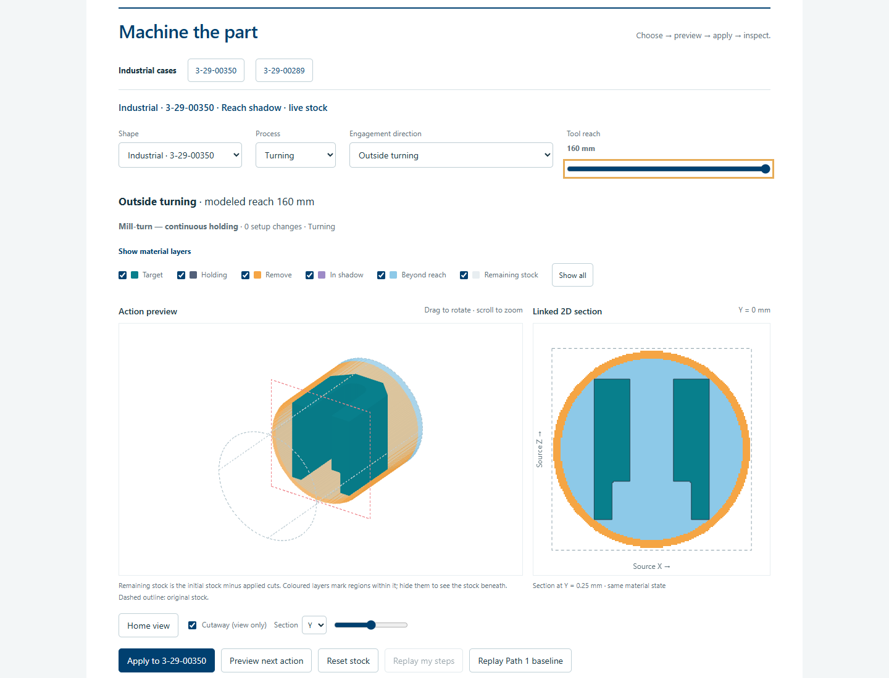
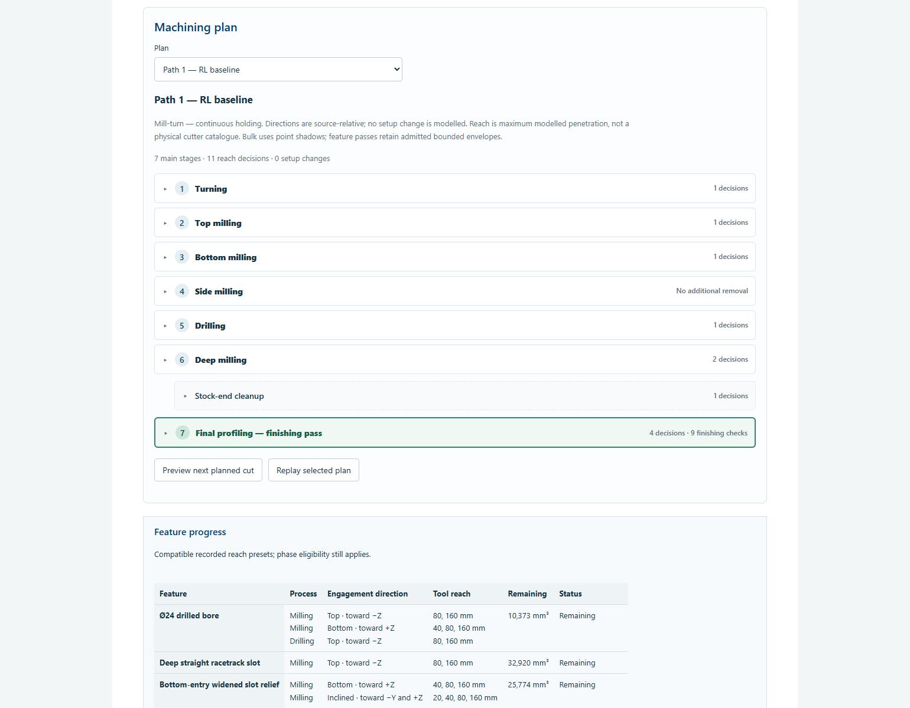
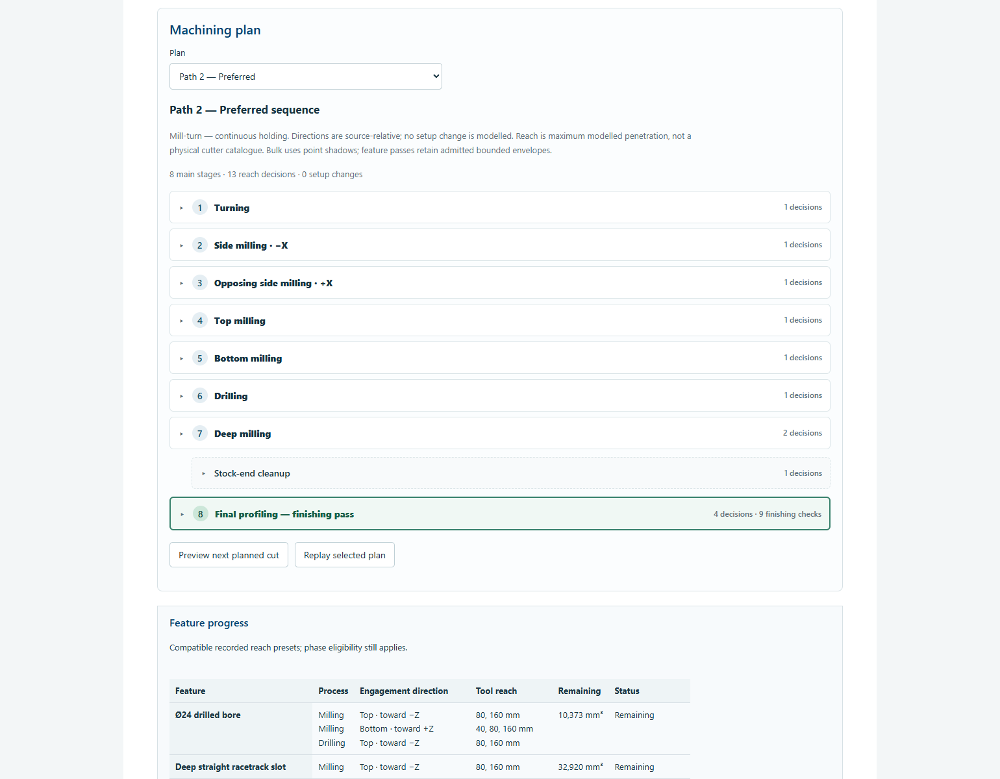
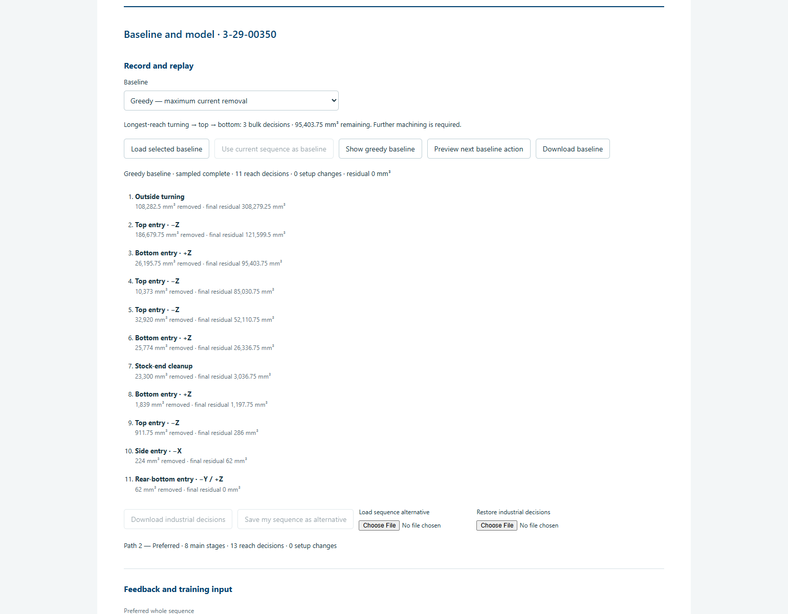
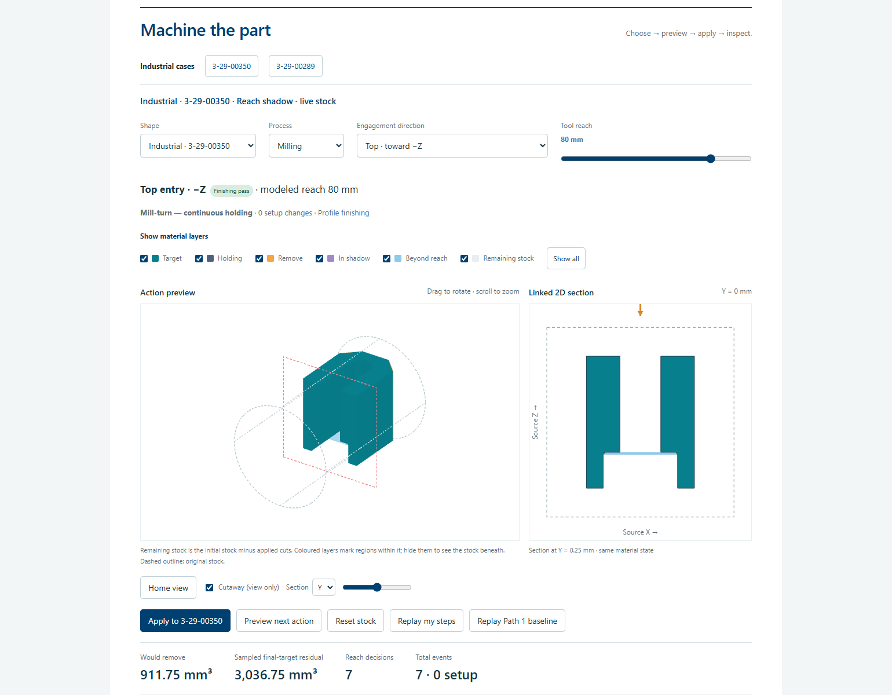
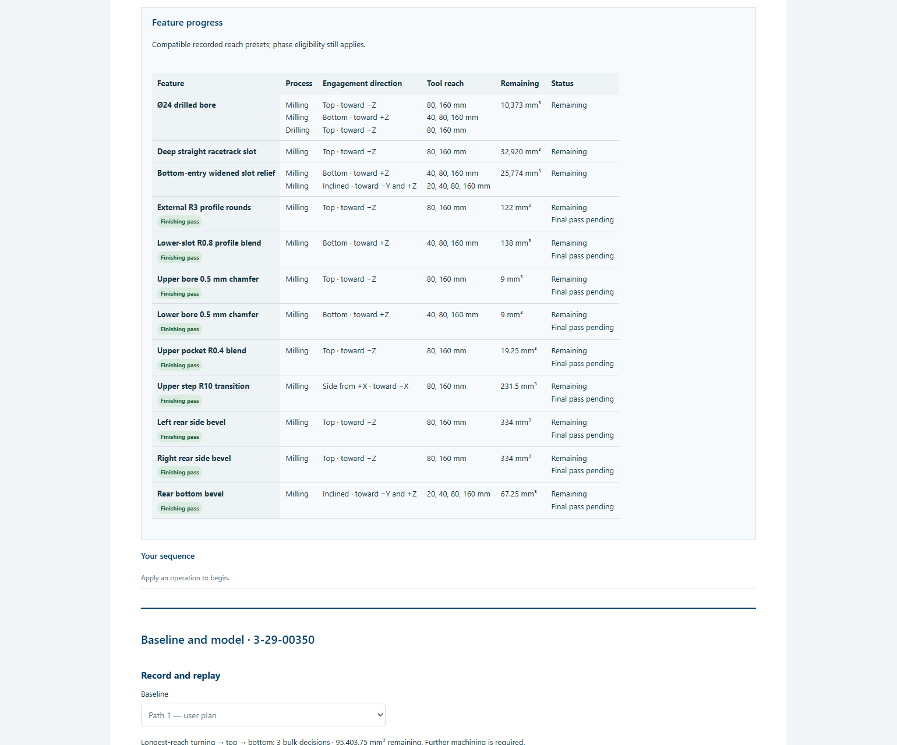
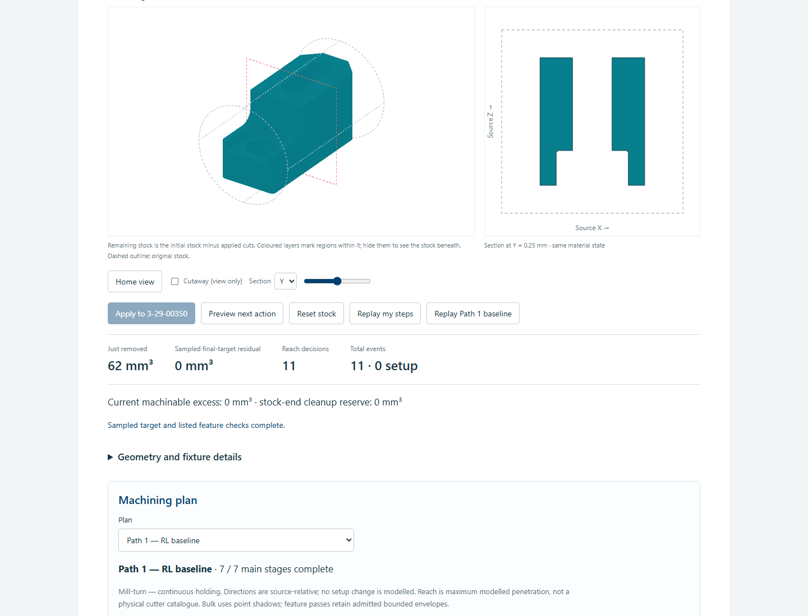
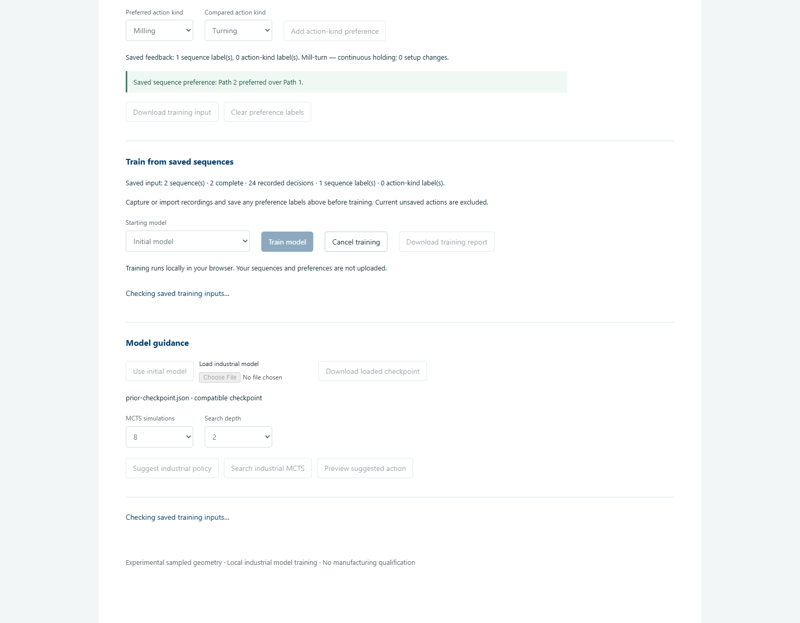
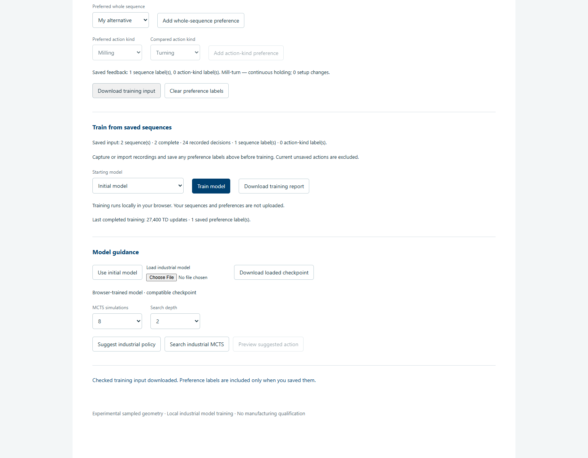
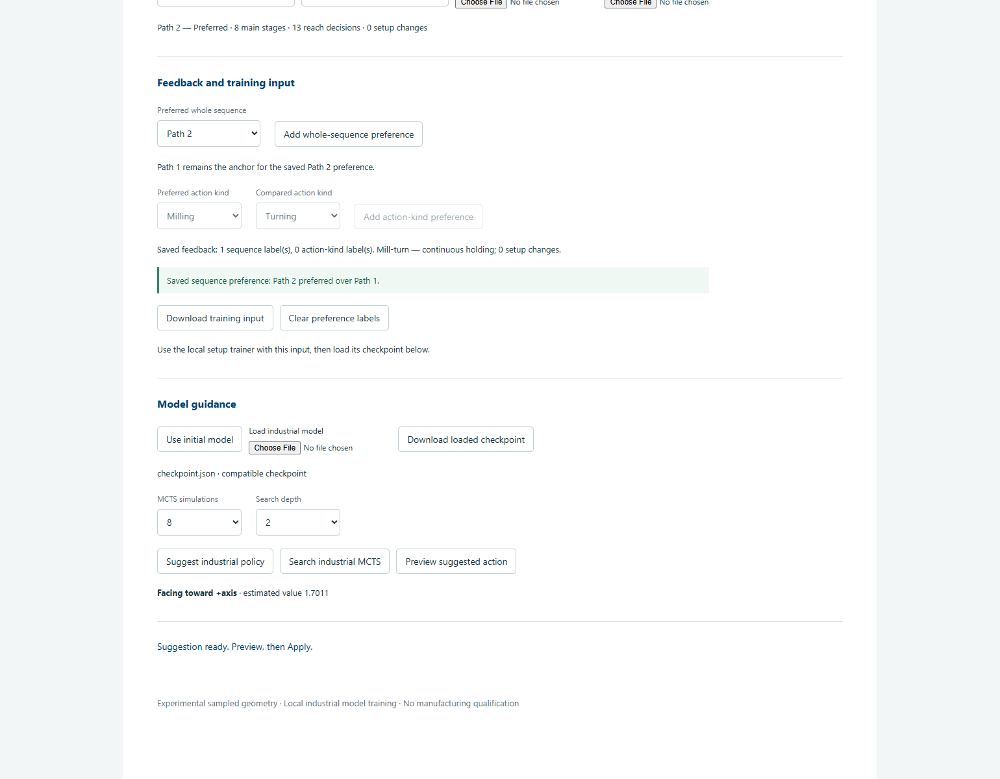

Process, direction and tool reach
A running prototype for comparing sampled machining decisions. Choose a process, an engagement direction and a reach preset; inspect the orange material, then apply the decision.
1. Preview, then remove material
- Select Turning, Milling or Drilling.
- Select Engagement direction. Top, bottom and sides refer to the source-coordinate approach axes.
- Move Tool reach to one of 5, 10, 20, 40, 80 or 160 mm. This is the modeled penetration limit from the stock reference, not cutter-body length.
- Inspect the orange volume and Would remove. Preview preserves the accepted stock. Click Apply to 3-29-00350 for an eligible positive decision.
One Apply records one phase/process/direction/reach decision. The common phase order keeps drilling, deep features, cleanup and final profiling explicit. A blocked or zero-removal preview cannot be applied.

2. Choose a baseline
In Baseline and model → Record and replay, choose Path 1 — user plan or Greedy — maximum current removal. Loading either baseline preserves your live stock. Show baseline opens a replay; Preview next baseline action prepares its next matching decision for manual Apply.
| Sequence | Role | Main stages | Recorded decisions | Final sampled residual |
|---|---|---|---|---|
| Path 1 | User baseline | 7 intended stages | 11 | 0 mm³ |
| Greedy | Computed maximum-current-removal baseline | Computed from eligible actions | 11 | 0 mm³ |
| Path 2 | Preferred alternative | 8 stages, including bottom milling | 13 | 0 mm³ |
Stage counts and recorded decisions differ. Path 1’s side stage has No additional removal after long-reach top and bottom milling, so it records no fake zero-removal action. Stock-end cleanup is an auxiliary positive cut. All three sequences use 0 setup changes under the declared continuous mill-turn holding assumption.
Longest-reach turning → top → bottom removes bulk stock in three decisions, but leaves 95,403.75 mm³. Drilling, deep features, stock-end cleanup and final profiling are still required.



3. Drill the bore and finish the secondary features
The Ø24 bore has an explicit Drilling phase. Deep-slot and lower-relief milling follow. Final profiling — finishing pass records nine source-feature checks: the external R3 rounds, lower-slot R0.8 blend, two bore chamfers, upper-pocket R0.4 blend, upper-step R10 transition, two rear side bevels and rear bottom bevel.

The Feature progress table shows feature, process, engagement direction, compatible reach presets, remaining volume and status. These are recorded contributing envelopes, not minimum physical tool requirements or a complete machining recipe. For example, later milling envelopes may intersect the bore region; the plan still requires the explicit drilling phase. Finishing rows use their designated finishing actions.

4. Record and restore your own sequence
- Apply decisions manually. The history records the exact accepted actions and their removed volumes.
- Choose Use current sequence as baseline. An incomplete sequence is saved as a draft; a complete sequence is saved as sampled complete.
- Choose Download baseline or Download industrial decisions to save the checked JSON.
- Reset stock restores the original material. Restore industrial decisions checks the file and reproduces its accepted state. Replay inspection preserves your own live stock.
Capturing a manual baseline clears saved sequence-preference labels. Record a complete alternative and explicitly add a comparison before exporting new training input. The named Path 1/Path 2 pair loads with the requested Path 2 preference.

5. Train from saved sequences in this browser
- Keep the complete Path 1 and Path 2 recordings and explicitly save Path 2 preferred over Path 1. Then select Greedy — maximum current removal and Load selected baseline before exporting or training. This adds the third saved sequence; Path 1 remains the anchor for the saved Path 2 preference. Check Saved input: the sequence, decision and label counts are the input for this run. Current unsaved actions are excluded. Download training input saves the exact checked feedback for your records.
- Under Train from saved sequences, keep Starting model → Initial model for a before/after comparison. Choose Continue from loaded model only when deliberately continuing a compatible checkpoint.
- Click Train model. Training runs locally in your browser. Your sequences and preferences are not uploaded. Read each stage's own completed/total count: validation, preference fitting, simulated experience, TD learning and model checking. The display does not estimate an overall percentage.
- Cancel training stops the active run. A cancelled or failed run preserves the previous loaded model, saved feedback and accepted stock.
- On successful completion, the checked result is loaded automatically as Browser-trained model. Read Last completed training for its actual TD updates and saved labels. Choose Download loaded checkpoint and Download training report, and keep these files with the exact training input.


6. Save, reload and compare the new model
To verify a saved checkpoint round trip, use Load industrial model to select the newly downloaded checkpoint. Loading preserves accepted stock and checks compatibility. Older finite-path and original three-cut checkpoints do not apply to this reach case.
Reset stock before each complete rollout. Compare Path 1, Path 2, Greedy, initial policy, trained policy and trained-model MCTS from the same original stock. Use Use initial model for the initial policy comparator; reload the newly trained checkpoint before either trained run. For the example MCTS comparison use 16 simulations, depth 3 and exploration 1. At each decision, choose Suggest industrial policy or Search industrial MCTS, then Preview suggested action, inspect the orange volume and explicitly Apply. Suggestions preserve accepted stock.
Retain the actual accepted decisions, sampled residual, finishing checks and setup changes for each rollout. A different ranking or more decisions does not establish better machining. Browser training uses only saved sequences and labels; it does not silently add a preference from unsaved actions.
Optional: reproduce training with Node.js 24
For a terminal reproduction, use a checkout of this repository. From its root, put the unchanged downloaded feedback at runs/reach-feedback.json. Compute its hash and choose a new output directory:
node --version $feedbackHash = (Get-FileHash -Algorithm SHA256 -LiteralPath runs/reach-feedback.json).Hash.ToLowerInvariant() node prototypes/industrial-reach/scripts/train-industrial-setup-episode.mjs --feedback runs/reach-feedback.json --expected-sha256 $feedbackHash --dataset prototypes/industrial-reach/examples/industrial-reach/00350/case.json --output runs/reach-trained-00350
The default configuration uses 200 reward epochs, 200 TD epochs, 12 exploration episodes and seed 350289. The terminal trainer writes checkpoint.json, exact feedback, replayed initial/trained policies, a comparison and a wrapper training-report.json. The browser report is the direct learning report. Choose the newly produced checkpoint with Load industrial model to inspect the terminal result in the app.
Historical supplied checkpoint and model guidance
Download the trained reach checkpoint · Initial checkpoint · Exact training input · Training report
This supplied example predates the browser Train button. Download the trained checkpoint, then choose it with Load industrial model. This checkpoint was trained on the exact reach action set using the saved Path 2-over-Path 1 comparison and 28,000 simulated TD updates. The actual browser checked its import, unchanged export and read-only suggestions. Older finite-path checkpoints are rejected.
| Historical measured rollout | Decisions | Final sampled residual |
|---|---|---|
| Initial policy / Greedy baseline | 11 / 11 | 0 mm³ |
| Trained policy | 20 | 0 mm³ |
| Trained-model MCTS, 16 simulations and depth 3 per decision | 18 | 0 mm³ |
The trained behavior changes, but uses more decisions than the initial and Greedy policies. Neither learned rollout exactly replays Path 2. These results do not establish greater machining efficiency. Download the policy comparison.
In Model guidance, load a compatible checkpoint, then choose Suggest industrial policy or Search industrial MCTS. A suggestion preserves accepted stock. Click Preview suggested action, inspect it, then Apply. Cancel stops the computation while preserving stock and saved records.

3-29-00289
The second case link opens the existing main application. It retains its process, engagement direction and usable tool-reach controls plus its greedy baseline. Its checked baseline replay reaches zero sampled residual.
Prototype geometry and completion limits
The material state uses a 0.5 mm grid for 3-29-00350. Bulk milling uses sampled protected-front shadows and reach. Deep-feature and finishing decisions use checked source-feature envelopes. The model does not simulate a physical cutter diameter, holder, machine motion or detailed CAM path.
Continuous holding is a declared assumption. Changing approach direction does not create a reclamping event. Fixture contacts and rotary kinematics are not modelled. Stock-end cleanup remains a positive removal decision; material is never deleted by a setup label.
Zero sampled residual and listed feature checks establish completion only within this model. They do not establish continuous surface conformance. The inherited facing envelope uses a 0.01 mm standoff and leaves a documented 46.642447547 mm³ continuous remnant below the sampling representation.
Screenshots are from the running reach prototype. The training captures document the verified browser Train update; the supplied example metrics identify the earlier saved training input. Video is deferred.